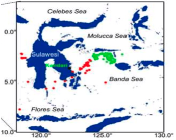

Deploy
Storage Resources
Data are stored in blobs in the East US data centre, in the following blob container:
https://
Within the container, data are organized according to:
[ ] / [ ] / [ ]
A Python code example for accessing the datasets directly is available in the notebook provided under “directly data access”.
Data Schema
Each FAD is uniquely identified by the following required information:
"FADId" – numeric ID 8 Charc Unique
"ISO_country" – location data (latitude and longitude) of the FAD around sea in St Lucia
"Latitude" – the latitude of the FAD's location
"Longitude" – the longitude of the FAD's location
"Year" – the year when the FAD's data was recorded
"Month" – the month when the FAD's data was recorded
"Day" – the day when the FAD's data was recorded
Through the “FADId” or “GPS” location, you can easily locate a specific FAD.
Apart from the data above, additional information can be found for most of the FADs:
"Windspeed" – Current windspeed around the FAD in Beaufort wind force scale KNOTS
"Time" – Current time of the FAD's data being recorded, format in hh.mm
"Temp" – Current temperature of the FAD’s environment in degree Celsius
"Depth" – Current depth of the FAD’s environment in meters
"Sal" – Current salinity of the FAD’s sea area
"pH" – Current pH of the FAD’s sea area
"Oxy" – Oxygen concentration of the FAD’s sea area
"Speed" – moving speed of the particular FAD in Knot Nautical Miles per Hour
"Heading" – compass bearing heading direction of the particular FAD
"FishLanding" – estimated fish landing values of 10 fish types for 10-11 fishing sites
Ways of showing data
We provide different kinds of views of the datasets e.g. graph, form, map. You can choose the way you want to see the data.
Example of a FAD location data map:
